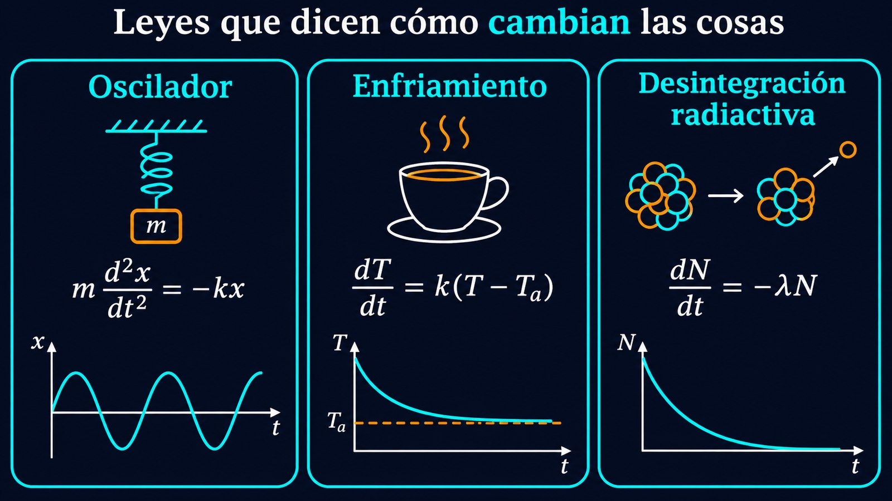

La física escrita en términos de cambios: qué son y por qué están en todas partes
Las leyes de la física casi nunca dicen directamente dónde está algo o cuánto vale. Dicen cómo cambia. La segunda ley de Newton relaciona la fuerza con la aceleración, que es el ritmo de cambio de la velocidad. La ley de enfriamiento de Newton relaciona el ritmo al que se enfría un cuerpo con su diferencia de temperatura con el ambiente. La desintegración radiactiva dice cuántos núcleos se desintegran por unidad de tiempo. Todas son ecuaciones diferenciales: ecuaciones cuya incógnita es una función y en las que aparecen sus derivadas.
Resolver una ecuación diferencial es encontrar la función que la cumple. Es el paso que lleva de una ley, que vale en cada instante, a una predicción: dónde estará el planeta dentro de un año, qué temperatura tendrá el café en diez minutos, cuánta carga tendrá un capacitor.

Una ecuación diferencial es una ecuación que involucra una función desconocida y una o más de sus derivadas. Una solución es una función que, al reemplazarla junto con sus derivadas en la ecuación, la satisface. El orden de la ecuación es el de la derivada más alta que aparece: la ecuación de la desintegración radiactiva es de primer orden; la de un resorte, de segundo.
Cuando la incógnita depende de una sola variable, por ejemplo del tiempo, la ecuación es ordinaria. Cuando depende de varias, como la temperatura de una barra que cambia con la posición y con el tiempo, aparecen derivadas parciales y la ecuación es en derivadas parciales. Las primeras describen la evolución de un sistema con pocas variables; las segundas, la de campos que se extienden en el espacio, como en las ecuaciones del calor, de onda y de Laplace.
Una ecuación diferencial no tiene, en general, una sola solución, sino una familia. La ecuación dy/dx = 2x la cumplen y = x2, y = x2 + 1 y, en general, y = x2 + C para cualquier constante C. Esa familia es la solución general; cada miembro, una solución particular.
Para elegir una hace falta información adicional: el valor de la función en un instante, y a veces también el de algunas derivadas. Una ecuación junto con esas condiciones forma un problema de valor inicial. En física, es la idea de que conocer las leyes no alcanza: hay que conocer también el estado de partida. La segunda ley de Newton es de segundo orden, y por eso para predecir el movimiento de un cuerpo hay que conocer su posición y su velocidad iniciales.
Leyes y condiciones iniciales: la ley de enfriamiento de Newton dice que el ritmo de cambio de la temperatura de un objeto es proporcional a la diferencia entre su temperatura y la del ambiente: dT/dt = k(T − Ta). La ecuación es la misma para una taza de café y para una cacerola; lo que distingue un caso del otro es la temperatura inicial y la constante k. Esa separación entre la ley, que es general, y las condiciones particulares de cada sistema es una de las ideas más fecundas de la física.
Hay técnicas para muchos tipos de ecuaciones. Las separables, en las que se pueden poner todos los factores de una variable de un lado y los de la otra del otro, se resuelven integrando: así se obtiene la ley exponencial de la desintegración radiactiva y del enfriamiento, el tema de el crecimiento exponencial. Las lineales, en las que la función y sus derivadas aparecen solo a la primera potencia, tienen métodos sistemáticos y una propiedad clave: la suma de soluciones es solución, el principio de superposición que aprovechan la separación de variables y la función de Green.
Muchas ecuaciones importantes, sin embargo, no tienen una solución que pueda escribirse con funciones conocidas. Para ellas hay otras herramientas: aproximaciones por series, métodos numéricos que avanzan paso a paso con una computadora, o un análisis cualitativo que, sin resolver la ecuación, permite saber si las soluciones crecen, oscilan o se estabilizan. Es el caso de los modelos no lineales, como el de presas y predadores o el de una epidemia.
Una consecuencia de escribir la física con ecuaciones diferenciales es que sistemas muy distintos comparten la misma matemática. La ecuación de la carga de un capacitor, la del enfriamiento de un cuerpo y la de la desintegración de núcleos radiactivos tienen la misma forma. La del péndulo para pequeñas oscilaciones es la de un resorte y la de un circuito con un inductor y un capacitor. Resolver una ecuación una vez sirve, entonces, para muchos fenómenos.
Las ecuaciones diferenciales son el idioma en que la física escribe sus leyes: no dicen cómo es el mundo en un instante, sino cómo pasa de un instante al siguiente. Resolverlas, con una condición inicial, convierte esas leyes en predicciones. Las hay ordinarias y en derivadas parciales, lineales y no lineales, con solución exacta y sin ella. Los artículos de esta serie recorren algunas de las más importantes y los métodos para tratarlas.
Pregunta para la comunidad: Si una ecuación diferencial de segundo orden necesita dos condiciones iniciales, ¿cuántas necesita la descripción del movimiento de un planeta en el espacio, con sus tres coordenadas? ¿Qué te dice eso sobre cuánta información hace falta para predecir el futuro de un sistema?